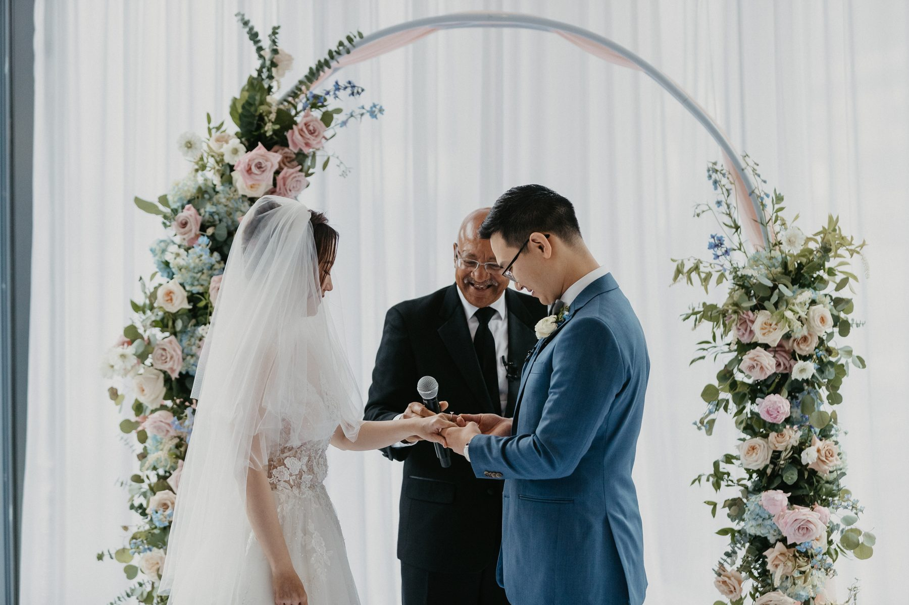
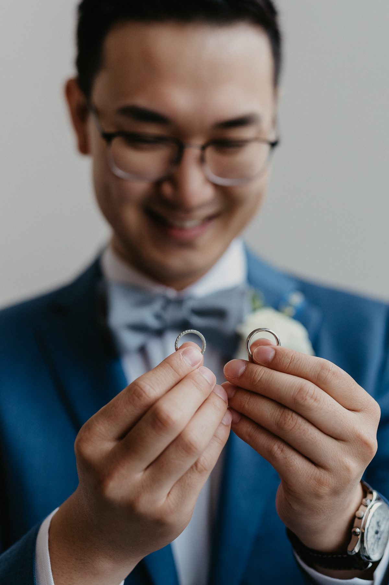

Every couple starts with the portfolio. Fair enough. But a portfolio shows you the best 40 frames from a decade. It tells you nothing about how the person behaves at 4:45 pm when the light is going and the family list is running long.
I have been on the other side of this conversation a lot. The couples who ask sharp questions get better photographers and better galleries. Here are the seven I would ask if I were booking.
Ask for one complete wedding, start to finish. You want to see the getting ready, the bad light, the crowded reception and the quiet moments between. A highlight reel hides how a photographer handles hard conditions. A full gallery shows you.
If every photo looks like it was taken in perfect golden hour, ask how they shoot a rainy ceremony in a dim room. Vancouver gives you plenty of those.
This is the one most couples skip, and it is the most important. Photographers are people. They get the flu. Cars break down. Ask for the actual backup plan, in writing. A real answer names a network of vetted photographers who can step in on short notice.
"I have never missed a wedding" is not a plan. It is luck.
You get one day. There is no reshoot. Ask how many cards they shoot to, whether they use dual card slots, and where the files live the night after. The right answer is two copies before they leave the venue, and a third backup within 24 hours.
It sounds paranoid. It is just what a professional does.
Delivery time is where bad experiences live. Some studios take four months. Some take six. Ask for a number, put it in the contract, and ask what happens if they miss it. A good answer includes a sneak peek within a week and a full gallery within a clear window.
Waiting is part of it. Waiting with no date is a problem.
A second shooter is not a luxury at a wedding with more than 60 guests. One photographer cannot be at the groom's prep and the bride's at the same time, and cannot cover the ceremony from two angles. Ask whether a second is included, who it will be, and whether you can see their work.
Also ask who you are actually hiring. Some studios sell you the lead and send an associate. Know which one is showing up.
Read it. Check the coverage hours, the delivery window, the usage rights, the payment schedule and the cancellation terms. If a photographer does not use a contract, walk away. If the contract has a clause you do not understand, ask. A good photographer is happy to explain every line.
Ask about rescheduling too. Plans change, and you want to know the cost before you need it.
Here is the contrarian bit. Most couples ask for raw files. I would not. Raw files are unedited data, not finished photographs, and they look flat and strange without the colour and tone work behind them. Ask instead how many edited photos you will receive, and whether the full edited set is delivered or a selected few.
What you want is a finished gallery, in high resolution, with print rights. That is what you will look at for 40 years.

Here is what I would really check. Do you like this person? You will spend eight to ten hours with them on the most emotional day of your year. They will be in your getting ready room, your family photos and your first dance.
Talk to them. Jump on a call. If they make you laugh and you relax, you will look relaxed in the photos. If you feel like you are being sold to, trust that too.
Pick two or three photographers, ask all seven questions, and compare the answers side by side. The best choice is usually obvious by the third one.
If you are still working out coverage, our guide to how many hours of wedding photography you need is a good place to start. And if you want to ask me these seven, get in touch. I will answer every one.
← Back to the journal